Prerequisites
Students should be familiar with the concepts of charge, electric field, and electric field lines, and Coulomb's law of electrostatics and Newton's second law of motion.
Learning Outcomes
Students will be able to review the definition of the electric field, will be introduced to the concepts of electric potential and potential energy in an electric field, and the relationship between electric field and electric potential and the parallel relationship between electric force and electric potential energy. They will learn to apply these concepts in the situation where the electric field is due to a single point charge.
Instructions
Students should know how the applet functions, as described in Help and ShowMe.
The applet should be open. The step-by-step instructions in the following text are to be done in the applet. You may need to toggle back and forth between instructions and applet if your screen space is limited.
 Laws, Theorems,
Definitions
Laws, Theorems,
Definitions
 Newton's Second Law of
Motion
Newton's Second Law of
Motion
 Coulomb's Law of
Electrostatics
Coulomb's Law of
Electrostatics
 Definition of Electric Field
and Electric Field Lines
Definition of Electric Field
and Electric Field Lines
 Definition of Electric
Potential and Equipotential Lines
Definition of Electric
Potential and Equipotential Lines
 Potential Energy and Energy
Conservation
Potential Energy and Energy
Conservation
 Potential and
Potential Energy in the Electric Field Due to a Point Charge
Potential and
Potential Energy in the Electric Field Due to a Point Charge
 Motion of a Charged Particle in
a Uniform Electric Field
Motion of a Charged Particle in
a Uniform Electric Field
 Electric Potential and
Equipotential Lines
Electric Potential and
Equipotential Lines
 Electric Potential and
Potential Energy
Electric Potential and
Potential Energy

Newton's Second Law of Motion
The sum of all forces1,
,
(1)

Any two particles carrying electric charges q1 and q2 exert electrostatic forces on each other. If the two charges have the same sign, the particles exert repulsive forces on each other. If they have opposite sign, the forces are attractive. The force exerted on Particle 1 has the same magnitude F as the force exerted on Particle 2, equal toF = k|q1||q2| / d2
where d is the separation between the two particles and k is a universal constant whose value is
k = 8.988×109 N m2 C-2.
Comment. The force 12 exerted on
particle 1 by particle 2 is proportional to the charges
q1 and q2 of these
particles while the magnitude F of this force, as
given by Expression (2) above, depends only on the
magnitudes of these charges. 12 depends on the charges themselves,
not only their magnitudes, because reversing the sign of
one of these charges reverses the direction of the vector
12. The same is true, of course, for
21, the force exerted on particle 2
by particle 1.
If
=
is called the electric field at the given point.
Comment 1. Electric fields produced by source
charges at rest, i.e., fields that are superpositions of
fields due to point charges at rest, are called
electrostatic fields. Coulomb's law implies that
the force exerted on a charged test particle in
such a field is proportional to the charge q of
the test particle.
Therefore, for an electrostatic field, dividing
by q in Definition (4) gives a
quantity that is independent of
q. Thus, characterizes an "electric
intensity" that is present without the test particle
and does not depend on any properties of the test
particle.
This is true in general for all kinds of electric fields, not only electrostatic fields, but also so-called induced electric fields that are due to changing magnetic fields.
For an electric field due to a single point charge, as in
the present applet, Definition (4) implies that the vector
at a given field point points in the radial
direction away from or towards the source, depending on
whether the source charge is positive or negative,
respectively. This is so because the Coulomb force exerted
on a positive test particle by the source charge is
repulsive or attractive for positive or negative source
charge, respectively.
Definition (4), in combination with the Coulomb force
expression (2), also implies that the magnitude E of
the vector at a field point a distance r away
from the source is equal to k|Q|/r2.
Comment 2. Solving Equ.(4) for
gives the force exerted on a particle carrying charge
q in an electric field ,
= q . (5)
(5)
When one obtains force expression (5) in this way, it may seem to amount to nothing more than the definition of the electric field. However, it is not trivial that in a general electric field the force exerted on a test particle is proportional to the particle's charge q (or that the ratio in Definition (4) is independent of the charge in more general than just electrostatic cases).
Comment 3. Definition (4) implies that the SI-unit of the electric field is N/C. This unit is equal to the unit V/m, which is discussed in Comment 1 under "Electric Potential and Equipotential Lines" below.
Comment 4. The electric field is defined at all
points in space. It is therefore not a single vector, but
a "vector-valued function defined on space". This simply
means that to describe the electric field one must
specify the vectors at all points in space.
Comment 5. An electric field line is a line (not a straight line in general) that indicates the direction of the electric field vectors at points along the line.
The electric field vector at a given point on an electric field line is tangential to the line at that point.
A static electric field, i.e., a field accompanying one or more source charges at rest, has the property that it can be derived from a simpler field called the electric potential. The electric potential field is simpler because it is a scalar field, not a vector field like the electric field. The electric potential field assigns a scalar quantity to any given point in space called the electric potential at that point. The SI-unit of the electric potential is the volt (V).
How can a scalar field give rise to a vector field? A static electric field is constructed from its electric potential field as follows.
Suppose you know the electric potential field and want to know the electric field vector at a given point P. Look at the electric potential in the neighborhood of P. Find the direction leading away from P in which the electric potential decreases more rapidly than in any other direction. This is the direction in which the electric vector at P points.The magnitude E of the electric vector at P is equal to the magnitude of the distance-rate-of-change of the electric potential,


where |DV| / d is calculated in the direction of the electric field vector at P. |DV| equals |V(P') - V(P)| where P' is a point near P that, seen from P, lies in the direction of most rapid decrease of V and where d is the distance between P and P'.
If the electric potential is constant throughout a small neighborhood of P or if the electric potential has a maximum or minimum at P, the electric field at P is zero.
Comment 1. Definition (6) implies that the SI-unit for the electric field is the V/m. As mentioned in Comment 3 under "Definition of Electric Field and Electric Field Lines" above, Definition (4) gives the N/C as the SI-unit of the electric field. Equating the two units and solving the resulting equation for V gives the volt in terms of other SI-units,
1 V = 1 m × 1 N/C = 1 (N m)/C = 1 J/C. (7)
(7)
Comment 2. In the case of a field due to point source, as in the present applet, Definition (6) becomes
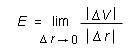 

Here r is the distance of a field point from the point source. Dr is the change in this distance, and DV is the corresponding change in V.
Comment 3 (Notation). This Comment will point out a
distinction between the two quantities Dr and |D |. D will be needed below.
|. D will be needed below.
For this purpose, Figure 1 below illustrates the example of
two points, P1 and P2, that lie on the
same equipotential circle around the source charge. The
position vectors of the two points relative to the source
charge - the origin of the coordinate system is taken to be
at the source charge - are the vectors 1 and 2, respectively.
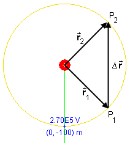
Figure 1
The displacement vector D =
2 - 1 from P1 to
P2 is obviously not zero. Therefore, its
magnitude |D|
cannot be equal to zero either.
The magnitude of the position vector of a field point
is denoted r. The quantity r is equal to the
distance of the field point from the origin.
Now consider the change in r as one goes from
P1 to P2, i.e., the quantity |.
Comment 4. It is customary to denote the limit of DV / Dr in Equ.(8) by dV/dr. This is a notation used in calculus. With this notation, Definition (8) can be written
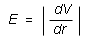  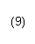
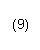
It is useful for applications in physics to think of the symbol dV/dr as a ratio of two very small quantitities, dV and dr, although strictly speaking dV/dr is just a shorthand for the limit (8). The reason this is possible is that when dV and dr are very small, their ratio will be very close to the value of the limit (8). Also, experimentally, one can not go to the limit of vanishing dV and dr but must measure finite dV and dr.
Comment 5. Taking dV/dr as a ratio of two small quantities, one can calculate E from Equ.(9) using two points P and P' on an electric field line that are a small distance dr apart. Vice versa, solving Equ.(9) for dV, one can calculate the small change dV = V(P') - V(P) in electric potential in going from point P to P'. If P', when seen from P, is in the direction of the electric field, i.e., in the direction of most rapid decrease of V, then
dV = V(P') - V(P) = - E
|dr| . (10)
(10)
The minus sign on the right-hand side is needed because the potential is decreasing in going from P to P'.
If the points P and P' are two general points that do not
necessarily lie on the same electric field line, Equ.(10)
must be generalized by replacing the right-hand side by the
scalar product of and the displacement
d from P to P'. Thus,
dV = -  d .
d .
 (11)
(11)
The same distinction that was pointed out between |D| and Dr in Comment 3 above must be
made between |d| and dr.
Comment 6. In general, the potential in the vicinity of a given point P will be decreasing in some directions, increasing in others, and remain constant along a line through P dividing the directions of decreasing and increasing potential. This dividing line is the "equipotential line" through P.
An equipotential line is a line along which the electric potential is constant.
Such lines are not straight in general. In the present case of a field due to a point charge with radial electric field lines, the equipotential lines are concentric circles with the source of the field as the center of the equipotential circles.
Note that one is dealing with equipotential lines when considering only two dimensions. In three dimensions, one has equipotential surfaces. For a point source field in three dimensions, the equipotential surfaces are concentric spheres with the source as the center of the spheres.
Comment 7. The electric field vector at a given point is always perpendicular to the equipotential line through that point because the perpendicular direction is the direction of most rapid change of the potential. As a consequence, electric field lines and equipotential lines cross at right angles at any given point.
This section focusses on the definition of the potential
energy PE of a charged particle in an electric
field and the relationship between PE
and the force exerted on the particle by the
field.
If you have mastered the preceding section, this material
is easy because PE and are
equal to the corresponding quantities V and
, respectively, multiplied by the charge
q of the test particle. Thus,
PE = qV  (12)
(12)
and
= q .  (13)
(13)
Comment 1. Equ.(13) is the same as Equ.(5). Equ.(12) is a definition of the potential energy in terms of the electric potential.
Comment 2. The vector is
different in general at different points in space. In the
present case of a field due to a point source, the field
vector has a radial direction and a magnitude proportional
to 1/r2 where r is the distance of
the field point from the source. Thus the field vector
varies in direction and magnitude as the field point is
varied.
Therefore the force is a function of position
also. Thus, Equation (13) defines a force field. In
the present case of a field due to a point source the force
is given by Coulomb's law, which is summarized above under
"Coulomb's Law of Electrostatics".
Since the electric potential is a scalar field, Definition (12) makes the potential energy of a test particle a scalar field as well. All this means is that the potential energy is a scalar quantity whose value depends in general on where the test particle is.
Comment 3. The electric field points from high to low potential, in the direction of the most rapid decrease of the potential. Because of Eqs.(12) and (13), the force points from high to low potential energy, in the direction of the most rapid decline of the potential energy. This statement is obviously true for positive charge q, but it is true also for negative charge. Why?
Comment 4. Equ.(7) says that the volt is equal to 1 J/C. Therefore, the SI-unit of the quantity PE defined in Equ.(10) is C × J/C = J. The joule (J) is the unit of energy. Thus, PE has the right units to be some kind of energy. The next two comments will make it clear that PE is indeed a potential energy.
Comment 5. By multiplying Equs.(6), (8), and (9)
on both sides by q one obtains analogous equations
relating the force exerted on the charged
particle to the potential energy PE of the
paricle in the field.
Thus, Equ.(8) implies that the magnitude F of the force on a test particle in the electric field of a point source is given by
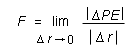 

Using calculus notation, the equation for F analogous to Equ.(9) is
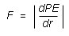  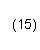
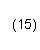
Again, interpreting dPE and dr as very small quantities, one can calculate F from Equ.(15) as a ratio of two small quantities. This equation can be inverted to give the small change dPE = PE(P') - PE(P) in the potential energy of the particle as the particle moves from point P to a point P' that is close to P and on the same electric field line:
dPE = PE(P') -
PE(P) = - F |dr| . (16)
(16)
Here P', when viewed from P, is in the direction of most rapid decrease of PE.
For an electric field due to a point source, as in the
present applet, Equ.(16) is true also if P and P' do not lie
on the same field line. This is so because the electric
potential and the potential energy depend only on r
in this special case. In the case of a more general field,
and for an arbitrary pair of points P and P' that are close
to each other, Equ.(16) must be generalized by replacing the
right-hand side by the scalar product of
and the displacement vector d
from P to P'. Thus,
dPE = PE(P') -
PE(P) = -d .  (17)
(17)
The scalar product d in Equ.(17), or the product
F |dr| in Equ.(16), is equal to the work
dW done by the electric field on the particle when
the particle moves from P to P'. Thus,
dPE = PE(P') -
PE(P) = - dW.  (18)
(18)
This is precisely the standard definition of a potential energy. First of all, one defines potential energy in terms of its change, dPE; one does not define the potential energy PE itself. This leaves an additive constant in the potential energy undetermined that one is free to choose any way that is convenient. Second, if a potential energy can be associated with a force field (possible for special force fields only that are called conservative), then it is the negative of the work done by the force that is equated with the change in the potential energy. The reason why one uses the negative of the work in the definition of potential energy will be made clear in the following comment.
Comment 6. By the work-kinetic energy theorem, the small amount of work dW done on the particle by the electric field is equal to the small change dKE in the particle's kinetic energy as the particle moves from P to P',
dW = dKE =
KE(P') - KE(P) . (19)
(19)
Substituting Expression (19) for dW into Equ.(18) gives
dPE = - dKE . (20)
(20)
In words, if the test particle in moving from P to P' gains an amount dKE of kinetic energy, then its potential energy changes by an amount equal to -dKE, i.e., it decreases by an equal amount.
This is exactly the concept of potential energy. A particle has potential energy that can be converted into kinetic energy. If the kinetic energy increases by, say, 5 J, the potential energy decreases by 5 J. Energy gets converted from potential to kinetic energy, and energy is neither created or destroyed. Energy conservation in this process can be exhibited more directly as follows.
Let E denote the sum of kinetic and potential energy,
E = KE + PE . (21)
(21)
The quantity E is called the energy of the particle in the electric field. The change dE in the energy as the particle moves from P to P' can be found by moving dKE in Equ.(20) from the right-hand side to the left-hand side. Thus,
dKE + dPE = dE = 0 . (22)
(22)
This equation says that E does not change when the particle moves from P to P'. One says that the energy is conserved.
For the case of an electric field due to a point charge, as in the present applet, one can use Equs.(10) and (16) or (11) and (17) to calculate the electric potential and the potential energy of a test particle in the field.
This calculation requires a calculus process called integration. Integrating means summing the small changes dV in potential and dPE in potential energy along a path from a point P to another point P' an arbitrary distance away from P.
One needs to use Equ.(2) for the magnitude F of the force exerted on the test particle by the source and the corresponding expression F/|q| for the magnitude E of the electric field at the point of the test particle.
Substituting for q1 the source charge Q and for q2 the test charge q, Equ.(2) gives
F =
k|Q||q| /
r2. (23)
(23)
Dividing F by |q| gives
E =
k|Q| /
r2. (24)
(24)
With these expressions for F and E, the integration process gives for PE and V at a point that is a distance r away from the point source the following expressions. (The calculation is a standard exercise in the application of calculus and will not be reproduced here.)
PE(r) = kQq / r  (25)
(25)
and
V(r) = kQ / r  (26)
(26)
where k is the universal constant in Coulomb's law,
k = 8.988×109 N m2
C-2.  (27)
(27)
Note that Expressions (25) and (26) involve the charges themselves, not their absolute values as in Equs.(23) and (24). This is a consequence of the way the electric potential and and the potential energy are defined. E.g., the electric potential decreases in the direction of the electric field, and the latter depends on the sign of the source charge Q. Therefore, the potential depends on Q, not |Q|. In Equs.(23) and (24) on the other hand, we are dealing with the magnitudes of the force and electric field vectors, which by definition are positive quantities, so that on the right-hand sides of these equations we need to use the magnitudes of the charges.
Comment 1. In Equs.(25) and (26), the arbitrary additive constants have been chosen so that the potential energy PE and the potential V both are equal to zero for r equal to infinity, i.e., when the test particle or the field point are infinitely far away from the source.
Comment 2. The denominators in Expressions (25) and (26) contain r to the first power, not to the second power as in the force and field expressions (23) and (24). The first power is not a typographical error.
Comment 3. The potential energy and the potential as given by Expressions (25) and (26), respectively, can take both positive and negative values, depending on the signs of the charges Q and q. (The potential depends only on Q.)
Task 1. Under "Laws, Theorems, Definitions" above, read the section "Definition of Electric Field and Electric Field Lines".
Exercise 1. RESET the applet. Make the following settings:
You may find it easier to move the particle to its initial position if you display the grid. The particle's position coordinates are displayed in the Data box.
Click the Initial button. Select the Trace toggle button, and PLAY the motion. PAUSE the motion at some point.
Describe the trajectory. In which direction relative to that of the electric field does the trajectory curve? Therefore, in which direction is the force acting on the particle? Hint: The acceleration vector is in the direction of the force, according to Newton's second law. The applet lets you display the acceleration vector.
Explain your observations in terms of the theory under "Definition of Electric Field and Electric Field Lines".
Answer. Figure 2 below shows the trajectory (in blue), with the particle paused on it and the velocity and acceleration vectors displayed.
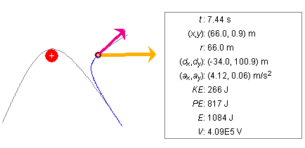
Figure 2
For a positive source charge as in the present Exercise, the electric field points radially away from the source. By Equ.(5), for a test particle with positive charge as in this Exercise, the force acting on the test particle is in the direction of the electric field, i.e., also radially away from the source. This is a repulsive force. The direction of the acceleration vector and the shape of the trajectory confirm the direction of the force.
Question 1. For the settings in Exercise 1, what is the particle's acceleration when the particle is at the point shown in Figure 1, i.e., at (x,y) = (66.0, 0.9) m? Calculate the value of the acceleration from basic principles.
Answer. When force expression (5) is inserted in the
Newton's second law equation (1), one obtains an equation
involving the particle's acceleration .
Solving this equation for gives
= (q/m)
. (28)
(28)
We need to calculate the electric field vector at
(x,y) = (66.0, 0.9) m. The electric field vector
is in the direction of the position vector and
therefore proportional to . Thus,
=
c  (29)
(29)
where c is a factor such that the magnitude of
c is equal to E =
kQ/r2, where Q > 0. Thus,
cr = kQ/r2  (30)
(30)
whence
c = kQ/r3 . (31)
(31)
Inserting Expression (31) for c into Equ.(29) gives
=
kQ/r3 . (32)
(32)
At (x,y) = (66.0, 0.9) m, r has the value
r = (x2 +
y2)0.5 = (66.02 +
0.92)0.5 = 66.006 m. (33)
(33)
Inserting the given values into Expression (32) for gives
= [8.988×109×0.003 / 66.0063]
(66.0, 0.9) = (6188, 84.39) V/m . (34)
(34)
Inserting this value for and the given values for q
and m into Equ.(28) gives for the acceleration of the
test particle at (x,y) = (66.0, 0.9) m the value
= 0.002/3×(6188, 84.39) = (4.126, 0.056) m/s2
. (35)
(35)
Compare this value with the one shown in the Data box. The values are consistent within the number of significant digits displayed by the applet.
Exercise 2. Continuing from Exercise 1, click REWIND and change the value of the charge of the test particle from q = 2 mC to q = -2 mC.
PLAY the motion, and observe the trajectory. Which way does the trajectory curve relative to the electric field vector? Explain your observation in terms of basic theory. You should find the trajectory to look like the trajectory shown in grey in Figure 2 above.
Calculate the acceleration vector at a point where you paused the motion, and compare your result with that shown in the Data box.
Exercise 3. Continuing from Exercise 2, i.e., with q = -2 mC, click REWIND and set the source charge to Q = -3 mC. Also try the combination Q = -3 mC and q = 2 mC.
PLAY the motions, and observe the trajectories. Which way do the trajectories curve relative to the electric field vector? Explain your observation in terms of basic theory.
Without further calculation, predict what the acceleration vectors should be if you if you pause the motion at the same point as before (this may be possible only approximately), and verify your predictions by comparing them with the values shown in the Data box.
Exercise 4. Continuing from Exercise 3, investigate the motion for other values of the two charges and the mass, and other values of the initial position and velocity.
Explain your observations in terms of basic theory, and calculate the acceleration in each case at a point where you pause the motion.
Task 1. Under "Laws, Theorems, Definitions" above, read the section "Definition of Electric Potential and Equipotential Lines".
Exercise 1. RESET the applet.
Select the Coordinates button  , and click in the applet window to set a field point
marker. With the marker, the (x,y)-coordinates
of the point and the electric potential V at that
point will be displayed.
, and click in the applet window to set a field point
marker. With the marker, the (x,y)-coordinates
of the point and the electric potential V at that
point will be displayed.
Click the Field Line button  and the Equipotential Line button
and the Equipotential Line button  to display the electric
field line (in green) and the equipotential line (in mustard
color) through the point.
to display the electric
field line (in green) and the equipotential line (in mustard
color) through the point.
Drag the field point, and observe how the field line and equipotential line (which is a circle in this case) move along with the point. Based on these observations, draw a pattern of electric field lines and equipotential lines in your Notebook and explain why the field lines and equipotential lines form the pattern you observe.
Answer. The electric field lines are straight lines going from the source to infinitiy in a radial direction. The force on a charged test particle at a given field point is in this direction, and therefore so is the electric field at that point. The electric field line through a given point has the direction of the field vector at that point.
The equipotential line at a given field point is perpendicular to the electric field line at that point. Therefore the equipotential "lines" are concentric circles whose centers are at the source point. Such circles are perpendicular at any point to the radially directed field lines. An example of such a line pattern is shown in Figure 3 below.
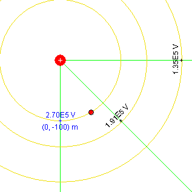
Figure 3
Question 1. Figure 4 below shows two equipotential circles, with radii of 100 m and 110 m, respectively. The potential on the 100-m circle is equal to 2.70×105 V. This is for a source charge Q = 3 mC.
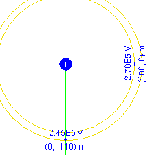
Figure 4
Calculate the electric potential on the 110-m circle using Equ.(10) from the section "Definition of Electric Potential and Equipotential Lines". This calculation will be approximate because the 10-m distance from one circle to the other is not an infinitesimal distance. Still this 10-m distance is "small" enough because the electric field does not vary much in magnitude over this distance. For more of an explanation, see Exercise 2 below.Answer. We need the magnitude E of the electric field on the 100-m circle. According to Equ.(24), it is equal to
E =
k|Q| /
r2 = 8.988×109×0.003 /
1002 = 2,697 V/m. (36)
(36)
Using dr = 10 m and using value (36) for E, Equ.(10) for the change dV = V(110 m) - V(100 m) implies
V(110 m) = V(100 m) - E dr =
2.70×105 - 2,697×10 =
2.43×105. (37)
(37)
This value is quite close to the value of 2.45×105 shown in Figure 4 above. Confirm this value with the applet by placing a field point marker at a distance of 110 m from the source.
Exercise 2. Calculate the magnitude of the electric field at a distance of 110 m from the source and determine by what percentage it differs from the magnitude of the field at 100 m from the source that was calculated above. You will find that the two values don't differ by much. This justifies the use of Equ.(10) in the preceding calculation. Compare the percentage by which the two electric field values differ to the percentage error in result (37).
Exercise 3. Using the value of the magnitude of the electric field at r = 110 m calculated in Exercise 2, calculate the change in potential in going from a point at r = 110 m to a point at r = 120 m. Use the result and the value of the potential at r = 110 m to predict the potential at r = 120 m. Compare the result to the value given by the applet.
Comment. One can continue in this manner, calculating potential changes in small steps along a path from one point P to a distant point P' and adding the potential changes, and in that way obtain the potential change for two points P and P' quite far apart. This is the integration process referred to at the beginning of the section "Potential and Potential Energy in an Electric Field Due to a Point Charge". To get an exact result, one has to go to the limit of infinitely many such steps, each of vanishing size. This limit summation can be performed symbolically. The result is Expression (26) for the electric potential.
Exercise 4. Reset the applet, and observe the value of V at the particle's location. V is displayed in the Data box. Also, note the length of the V-column in the Energy box. The test particle's charge q should be equal to the default value of 2 mC.
Then vary the charge of the test particle, and observe the value of V displayed in the Data box and the length of the V-column in the Energy box while you are changing the charge. Explain your observations in terms of basic theory.
Answer. Neither the electric field nor the electric potential depend in any way on the properties of the test particle. They characterize the state of space without the test particle. Therefore, changing the charge of the test particle has no effect on the value of the electric potential at the particle's location.
Exercise 5. Continuing from Exercise 4, vary the value of the source charge Q, including negative values. Observe the value of V in the Data box and the length of the V-column in the Energy box, and explain your observations in terms of basic theory.
Answer. This time the electric potential does not stay the same. When the source charge changes, the electric field changes. See, e.g., Equ.(24) or Definition (4) of the electric field, in conjunction with Coulomb's law. When the electric field changes, the potential must change according to the defining relationship between potential and field described under "Electric Potential and Equipotential Lines". Note that V is positive for positive Q and negative for negative Q, in the case simulated by the applet.
Exercise 6. This Exercise is about the concept of an electric field vector as an indicator of the direction of most rapid decrease of the electric potential and the rate of this decrease.
RESET the applet. Display two equipotential circles that are fairly close together, as in Figure 5 below. Choose the two radii to be 100 m and 120 m.
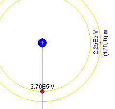
Figure 5
Place the particle at a point on the inner circle, as in Figure
5, and click the Initial button  .
.
Drag the particle to a point on the outer equipotential circle while the displacement vector is displayed. Drag the particle along the outer circle, and observe the magnitude of the displacement vector. In which direction is it the least? Therefore, in which direction does the potential decrease the fastest? Remember that the change in potential in going from one equipotential circle to another is constant, so that the direction of greatest rate of change of the potential is the direction in which the displacement vector is shortest.
Estimate the magnitude of the electric field at r = 100 m from the potential change indicated in Figure 5. The inner equipotential circle has a radius of 100 m. Then obtain a better estimate by using the data in Figure 4, where the two equipotential circles are only 10 m apart, instead of 20 m.
Answer. If you have chosen the particle's initial position as in Figure 5, the direction straight down is the direction of fastest decrease of the potential. Note that the potential on the outer circle is less than on the inner circle, so that the potential is decreasing in the downward direction. You can verify that the electric field at the location of the particle in Figure 5 is downward by displaying the particle's acceleration vector. The acceleration is in the direction of the force acting on the particle and, for positive test charge, this force is in the direction of the electric field, according to Definition (4). Therefore, the acceleration points in the direction of the electric field as long as the test particle has positive charge.
To calculate the magnitude E of the field, we use Equ.(9) with |dV| = |2.25×105 - 2.70×105| = 0.45×105 V and dr = 120 - 100 = 20 m. Thus,
E = |dV/dr| = 0.45×105/20 =
2,250 V/m. (38)
(38)
This value is not particularly good, as a comparison with the exact value of 2,697 V/m shows. This value is calculated in Equ.(36). However, using a smaller value for dr, namely, the smaller dr of 10 m from Figure 4, gives a noticeably better result:
E = |dV/dr| = |2.45×105 -
2.70×105| / 10 = 2,500 V/m. (39)
(39)
Task 1. Under "Laws, Theorems, Definitions" above, read the sections
Exercise 1. RESET the applet.
Set the particle's initial position and velocity at time t = 0 to
Fix these initial values by clicking the Initial button . This will also adjust the "initial" energy
bar in the Energy box to be identical to the "final" energy bar.
You may find it easier to move the particle to the initial position if you display the Grid. The particle's position is displayed in the Data box.
Make sure the parameters of the system are still set to
Display the particle trace, and STEP into the motion until you are at time t = 6.00 s and the particle is at (x,y) = (57.0, -12.6) m, as shown in Figure 6 below. The Energy box in Figure 6 shows what the energy bars should look like at this moment. The particle is moving on the trajectory that starts out in blue.
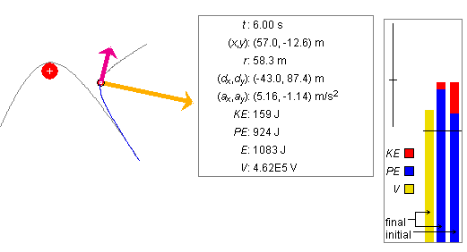
Figure 6
In your Notebook, describe the changes you observe in the particle's potential energy PE, kinetic energy KE, and total energy E as you step through the motion. Discuss if the changes are what you expect from basic theory. Also describe the changes in the electric potential V at the particle's position as you step through the motion, and explain them in terms of basic theory.
Answer. The potential V as a function of r is described by Equ.(26). According to this equation, if Q > 0, the potential increases as r decreases and decreases as r increases. Stepping through the motion should show this behaviour. You will need to go beyond t = 6.00 s to see the behaviour for increasing r.
Since the test particle's charge is positive, Definition (12) implies that the particle's potential energy behaves like the potential: it increases with decreasing r and vice versa. Since the total energy is conserved, the kinetic energy must decrease as the particle gets closer to the source, by as much as the potential energy increases. The particle slows down as it approaches the source. It speeds up as it moves away from the source. This makes sense intuitively because the Coulomb force is repulsive in this case.
Question 1. Click REWIND. The Data box will display the electric potential at the particle's start position as 1.91×105 V. Calculate the particle's potential energy at this point. The test particle's charge is equal to 2 mC.
Answer. Definition (12) of the potential energy, "PE = qV", gives the value PE = 0.002×1.91×105 = 382 J. Compare this value with the one shown in the Data box. The discrepancy of 1 J between the two values is due to round-off error.
Question 2. Continuing from Question 1, change the charge of the test particle from q = 2 mC to q = -2 mC. What are the values of the electric potential at (x,y) = (100, -100) m and of the particle's potential energy at this point now?
Answer. The electric potential is still equal to 1.91×105 V. Its value does not depend on any particle properties. However, the particle's potential energy has changed to -382 J, in accordance with Equ.(12). (The Data box shows -381 J.)
Exercise 2. Continuing from Question 2, with q = -2 mC, STEP through the motion until you are at time t = 6.00 s. What does the trajectory look like this time?
Observe the changes of the same quantities as in Exercise 1, and record in your Notebook if there are any differences compared to what you observed in Exercise 1. Explain the differences in terms of basic theory.
Answer. The trajectory is now curving towards the source charge. Again, in accordance with Equ.(26), the electric potential at the test particle is increasing as the test particle is approaching the source and decreasing as it is moving away from the source. Also, more fundamentally, as the particle is approaching the source, it is moving against the electric field and therefore into regions of higher electric potential.
The potential energy, however, has the opposite behaviour since it is equal to the potential multiplied by a negative constant. Thus, the potential energy decreases as the test particle moves closer to the source. Also, since the force is attractive in this case, we would expect the particle to be gaining kinetic energy and therefore losing potential energy as it approaches the source.
Question 3. Continuing from Exercise 2, click REWIND and change the test particle's charge back to q = 2 mC.
Make sure the particle's initial position and velocity at t = 0 are still equal to
Otherwise click RESET, and set these initial conditions. Lock the initial conditions by clicking the Initial button.
Make sure the parameters of the system are set to
Display the particle trace, and STEP into the motion until you are at time t = 9.00 s and the particle is at point P' with coordinates (x,y) = (85.3, 15.6) m.
Calculate the particle's kinetic energy at P'.
Answer. The answer can be obtained by using energy conservation. The calculation is broken up into four segments.
Electric Potential V at P'
By Equ.(26) and using the value r = 86.7 m given in the Data box (check this value by calculating it from the given x,y coordinates), the potential at P' is equal to
V(P') = kQ/r =
-8.988×109×0.003 / 86.7 =
3.11×105 V. (40)
(40)
This agrees with the value displayed in the Data box.
Potential Energy PE at P'
According to Definition (12) of the potential energy, we only need to multiply the electric potential at P' by the charge q to get the potential energy of the test particle at P',
PE(P') = qV(P') =
0.002×3.11×105 = 622 J. (41)
(41)
We could also have used Equ.(25) for PE directly.
Energy E
The energy of the particle in the electric field is conserved. Therefore, the energy at P' is equal to the energy at the start point P. The latter can be calculated from the given initial conditions.
The kinetic energy at the start point P is equal to
KE(P) = (m/2)v2 =
(m/2)(vx2 +
vx2) = 3/2×((-12)2 +
182) = 702 J.  (42)
(42)
PE(P) = kQq/r(P) =
8.988×109×0.003×0.002 / 141.42 =
381.3 J.  (43)
(43)
Adding the two energies (42) and (43) gives the total energy E both at P and at P',
E = KE + PE = 702 + 381.3 = 1,083.3 J
. (44)
(44)
This value agrees with that in the Data box.
Kinetic Energy KE at P'
The kinetic energy at P' can be obtained by subtracting from the total energy the potential energy at P',
KE(P') = E - PE(P') = 1,083.3 - 622 =
461.3 J.  (45)
(45)
Verify this value with the applet.
Exercise 3. Do more calculations analogous to those done in Question 3, by evaluating V, PE, E, and KE at some other point P' on the particle's trajectory and for points P' on other trajectories corresponding to other values of the particle's charge and mass and other values of the electric field.